Condições
As estruturas condicionais estão ligadas à tomada de decisão de um algoritmo. Por exemplo, se um aluno tiver a média de notas inferior a 7, o algoritmo irá mostrar "reprovado". Se a média de notas for superior ou igual a 7, o algoritmo mostrará "aprovado".
Essas estruturas condicionais podem ser inseridas dentro da entrada de dados, do processamento de dados ou dentro da saída de dados.
Em um programa que calcula a média das notas dos alunos e exibe se o aluno foi aprovado ou reprovado, as etapas de entrada de dados e processamento de dados serão as mesmas. A estrutura condicional será utilizada apenas na saída de dados, para mostrar a mensagem "Aprovado" ou "Reprovado".
Já em um programa que calcula o peso ideal (cálculo diferente para cada sexo), as etapas de entrada de dados e saída serão as mesmas. A estrutura condicional será dentro do processamento de dados (cálculo).
Para entrarmos nesse assunto, primeiramente devemos ver dois conceitos de extrema importância, os operadores relacionais e os operadores lógicos.
Operadores Relacionais
Veremos agora alguns operadores relacionais, que quando inseridos em um programa, cada comparação deve retornar true (verdadeiro) ou false (falso).
== Igual. Retorna verdadeiro caso os dados comparados contenham o mesmo conteúdo.
!= Diferente. Retorna verdadeiro caso os dados contenham conteúdos diferentes.
> Maior. Usado para comparar números ou palavras.
< Menor. Usado para comparar números ou palavras.
>= Maior ou Igual.
<= Menor ou Igual.
Existem também os símbolos de === (estritamente igual) e !== (estritamente diferente). Eles comparam o valor e também o tipo do dado, se é número ou string.
'5' === 5, retorna falso
'5' !== 5, retorna verdadeiro
Operadores Lógicos
Há situações em que devemos analisar mais de uma condição. Por exemplo, um cliente quer um carro azul ou cinza. Ou, um cliente quer um carro inferior a R$ 15.000,00 e o ano acima de 2010.
Os principais operadores lógicos em JavaScript:
Not ( ! ). Indica negação. Inverte o resultado de uma comparação.
And ( && ). Indica conjunção. Retorna verdadeiro (true) apenas quando todas as comparações forem verdadeiras.
Or ( || ). Indica disjunção. Retorna verdadeiro se, no mínimo, uma das condições for verdadeira.
Em operadores lógicos usamos uma tabela com todas as possíveis comparações, chamada tabela verdade.
Veremos um exemplo agora de como utilizar a tabela verdade com duas variáveis. Na tabela verdade utilizamos uma letra (p ou q) para representar uma proposição.
var cor = "Azul" ➜ P
var ano = 2017 ➜ Q
A tabela a seguir é a de negação ( ! ). Ela pode ser aplicada a apenas uma proposição.
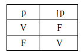
A negação é o mais simples dos operadores. Ela inverte o resultado de uma condição.
A tabela a seguir é a de conjunção ( && ). Ela reflete a ideia de simultaneidade.
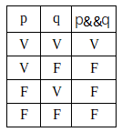
Só retorna verdadeiro se todas as comparações forem verdadeiras.
Ex: 1 < 4 && 4 > 2, essa expressão retorna true, pois as duas proposições são true.
A tabela a seguir é a de disjunção ( || ). Ela reflete a ideia de que pelo menos uma das condições deve ser verdadeira.
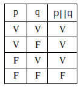
Ex: 3 > 5 || 1 < 4, essa expressão retorna true, pois a segunda proposição é true.
If ... else
Para criarmos uma estrutura condicional, utilizamos os comandos if ... else (se ... então). Eles possuem algumas variações. É possível utilizarmos apenas o if sem o else. E também criarmos vários comandos else.
Uma condição simples sem o else:
if (condição) {
comandos para true;
}
Condição if ... else:
if (condição) {
comandos para true;
} else {
comandos para false;
}
Múltiplas condições:
if (condição) {
comandos 1;
} else if (condição) {
comandos 2;
} else {
comandos 3;
}
IMPORTANTE: Quando houver apenas uma linha de comando que pertence à condição, o uso das chaves não é obrigatório.
if (condição) comando;
Switch ... Case
Switch case é um outro tipo de estrutura condicional. Ele é útil quando tivermos várias alternativas a partir de uma variável.
No exemplo abaixo o programa é feito dentro do arquivo index.html. Note que o programa todo está entre a tag script.
Primeiramente temos uma entrada de dados (prompt), onde o valor digitado é convertido para número através do comando Number( ), e em seguida armazenado na variável numero. Na próxima linha temos a declaração da variável resultado, mas nenhum valor valor é atribuido.
A estrutura switch escolhe a condição a ser executada a partir da variável numero. Se o número digitado na entrada de dados (prompt) for 1, os comandos de dentro do case 1 serão executados. O break significa que a estrutura switch encerrou e o próximo comando a ser lido será o alert (saída de dados). Só entrará no default caso nenhuma das condições anteriores forem executadas.
Na saída de dados alert, temos o uso do formato template strings, que utiliza o sinal de crase (` `), o cifrão ($) e as chaves { }, para mostrar a saída de dados.
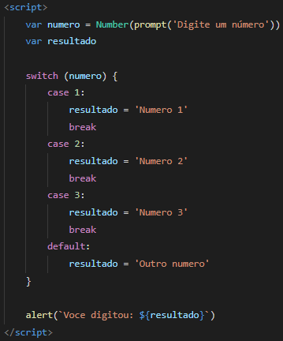
Ao abrir o programa index.html através do navegador, temos a seguinte imagem:
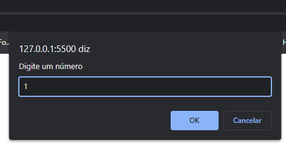
Ao digitar um número e clicar em OK, a saída de dados será dessa forma:
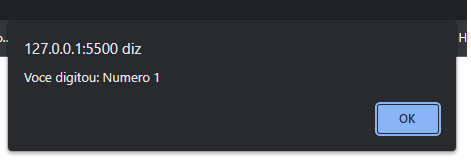
Operador Ternário
Existe ainda uma forma abreviada para criar as instruções if ... else conhecida como operador ternário.
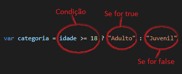
Exercícios
a ) Elabore um programa que leia o nome e as notas de um aluno, apresente a média e uma mensagem para o aluno, caso aprovado "Parabéns Aluno! Você foi aprovado(a)", e caso reprovado "Que Pena Aluno. Você foi reprovado(a)". A mensagem de aprovação deverá ser azul e a de reprovação vermelha.
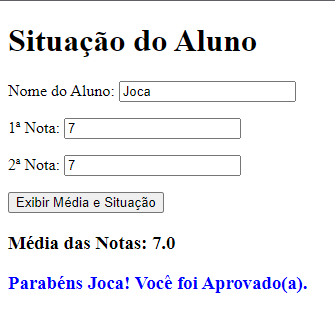
b ) Elabore um programa que calcule o peso idel de uma pessoa. Para homem o cálculo será ( 22 * altura² ), se for mulher será ( 21 * altura² ).
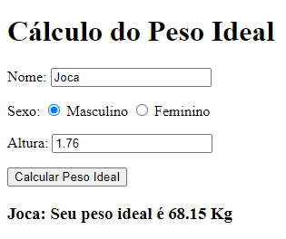
c ) Elabore um programa que leia a hora no Brasil e informe a hora na França. Sabendo que na França é 5 horas a mais que no Brasil.
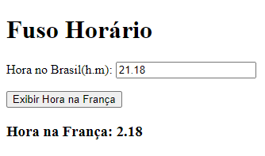
d ) Elabore um programa que leia um número e calcule sua raiz quadrada. Caso a raiz não seja exata, informe "Não há raiz exata para ...".
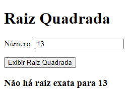
e ) Elabore um programa que leia um número e informe se ele é ímpar ou par.
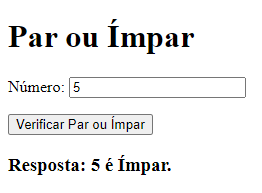
f ) Elabore um programa que leia a velocidade permitida em uma estrada e a velocidade de um condutor. Se a velocidade for inferior ou igual a permitida, exiba "Sem multa". Se a velocidade for de até 20% maior que a permitida, exiba "Multa leve". Se a velocidade for superior a 20% da velocidade permitida, exiba "Multa drive".
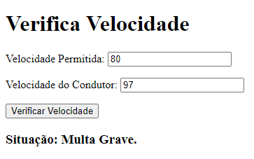
g ) Elabore um programa que simule um parquímetro, o qual leia o valor de moedas depositado. O programa deve informar o tempo de permanência do veículo no local e o troco (se existir). Se for inferior ao tempo mínimo, exiba a mensagem "Valor Insuficiente.". Considere os valores e o tempo da tabela a seguir.

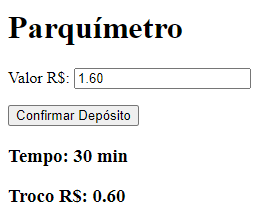
h ) Elabore um programa que leia três lados e verifique se eles podem ou não formar um triângulo. Para formar, um dos lados não pode ser maior que a soma dos outros dois. Caso formem um triângulo, exiba qual o tipo: Equilátero (3 lados iguais), Isósceles (2 lados iguais) e Escaleno (3 lados diferentes).
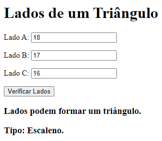
i ) Elabore um programa que leia dois números e verifique quem é o maior.
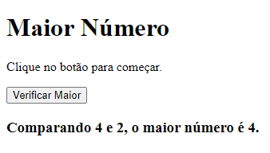
j ) Elabore um programa que leia dois números e calcule a operação escolhida.
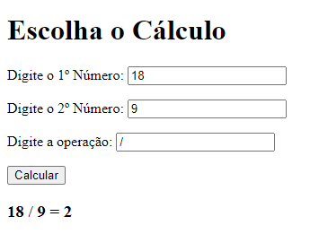
Resolução dos Exercícios
a )
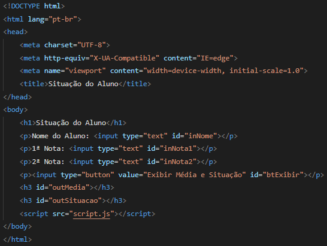
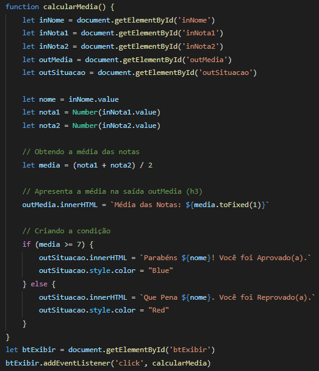
b )
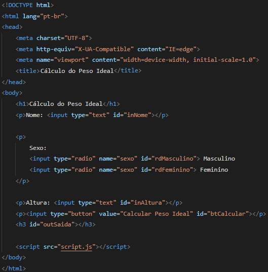
Para pegarmos a opção que foi clicada nos input's radio, utilizamos o comando checked. A variável masculino irá guardar true ou false, da mesma forma que a variável feminino. Na estrutura if...else, se masculino for true, o comando peso = 22 * Math.pow(altura, 2) será executado. A função matemática Math.pow significa exponenciação (altura elevado a 2).
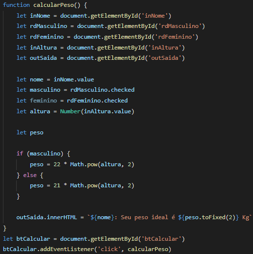
c )
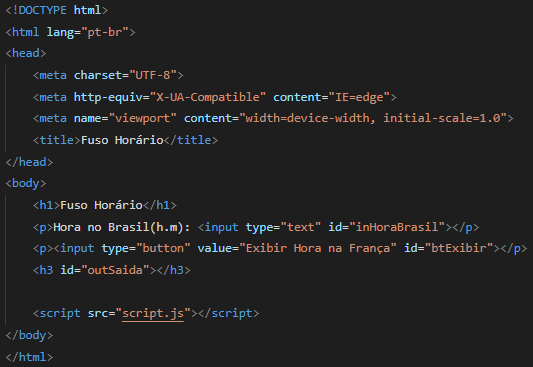
A variável horaFranca recebe a hora digitada mais 5. Mas, e se a hora digitada for 21 ? Para isso temos a estrutura condicional seguinte. Caso o valor da variável horaFranca seja 26, esse valor será subtraido por 24.
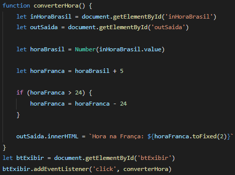
d )
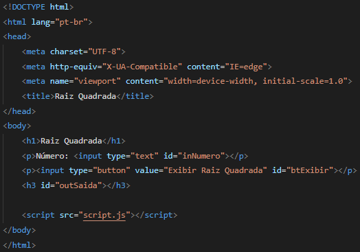
A variável raiz contém a função matemática Math.sqrt(), que calcula a raiz quadrada de um número. Nesse caso, está sendo calculado a raiz da variável numero.
No início da estrutura condicional, temos uma condição, se raiz for igual a Math.floor(raiz). Se resultar em true, o primeiro comando entre chaves { } será executado.
O comando Math.floor(raiz), significa que se a raiz for um número com casas decimais após a vírgula, desse número será usado apenas o número inteiro.
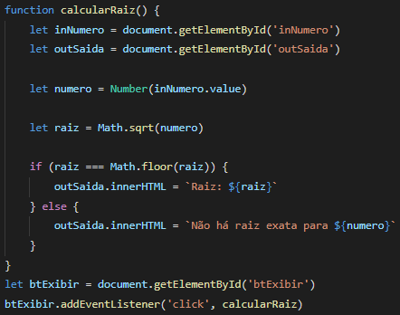
e )
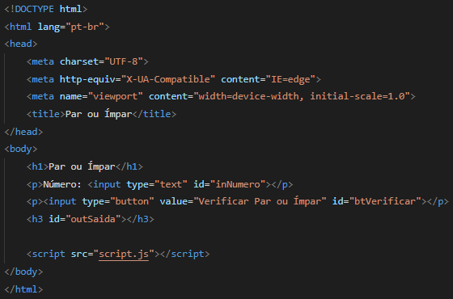
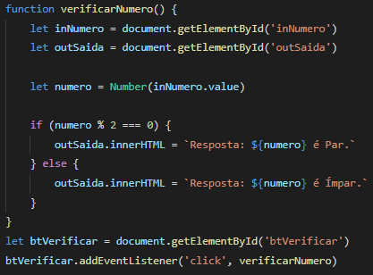
f )
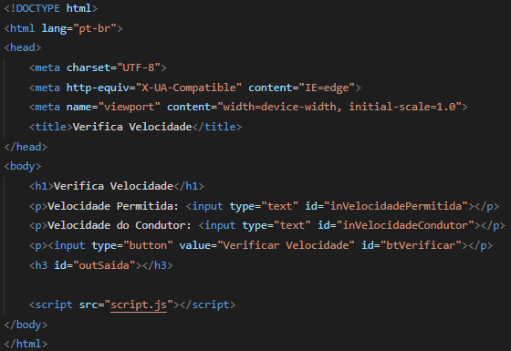
Como o valor de 20% é citado duas vezes no enunciado da questão, é criado a variável vintePorcento. Entre parênteses a variável velocidadePermitida é multiplicada por 20%. Logo depois, é somada com ela mesma.
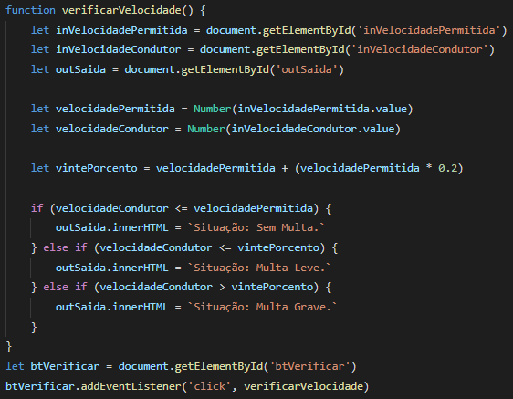
g )
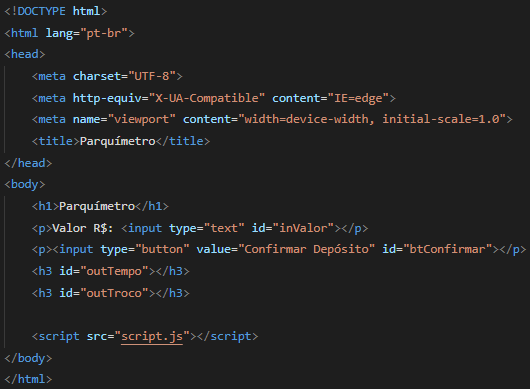
O primeiro if é para evitar que valores menores que 1 sejam digitados. Se o valor for menor que 1, o comando alert é executado com a mensagem Valor Insuficiente. inValor.focus() significa que o cursor ficará piscando na caixa inValor.
let troco, tempo é outra forma de declarar variáveis. É o mesmo que declarar primeiro a variável troco e depois a variável tempo.
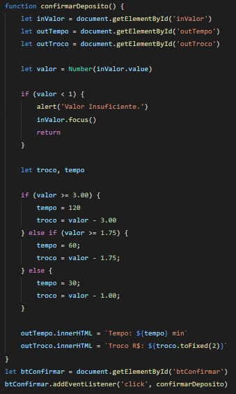
h )
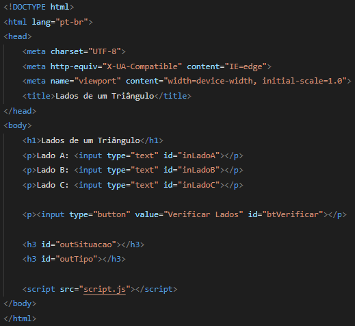
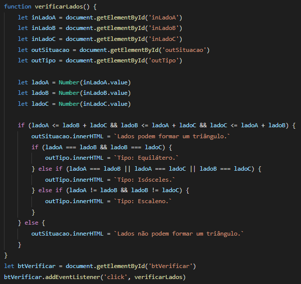
i )
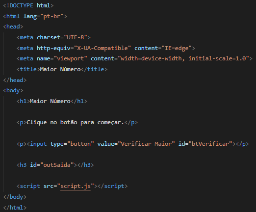
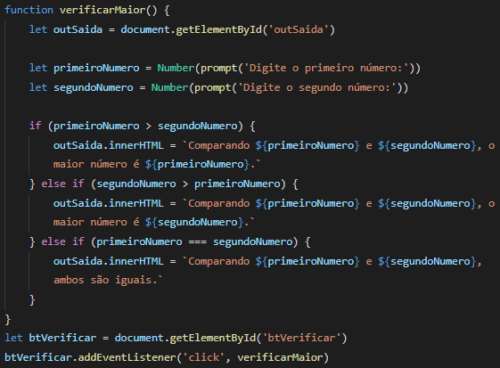
j )
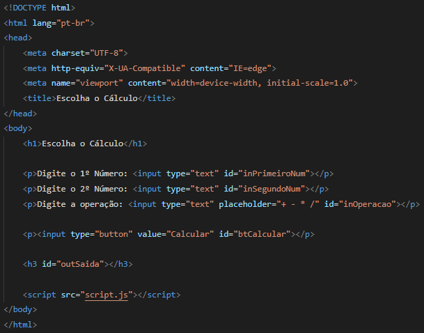
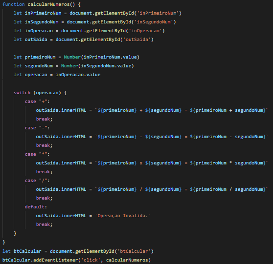